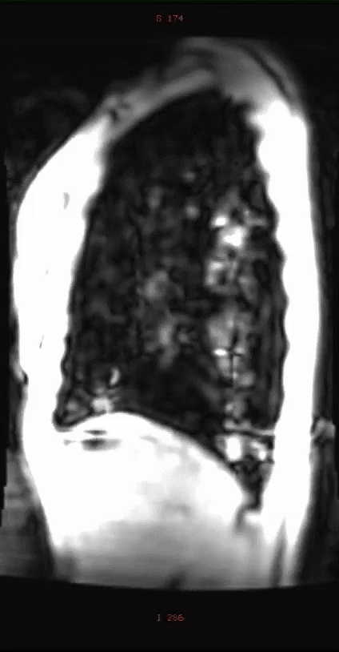
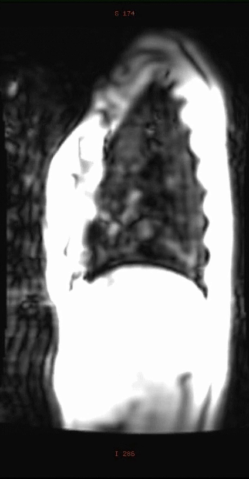

The lung base during forced expiration
A healthy adult volunteer performs an FEV₁ measurement while supine. This source movie shows qualitative lung-base/diaphragm excursion during a forced manoeuvre, rather than quiet tidal breathing.
Healthy volunteer · forced expiratory FEV₁ manoeuvre
Single-hemithorax, sagittal-appearing profile · original S/I markings
Native pixels changes display size only. Focus the player region and use arrow keys to pan; Home/End reaches the corners. Playback and stepping use publisher file seconds.


Watch the boundary between the dark lung profile and bright tissue below it. Its elevation and the changing lung profile are the supported observations; thin diaphragm structure and local muscle strain are not resolved.
Time representation. The 10.56-second publication file contains 48 encoded frames at 50/11 fps. There is no displayed experiment clock or verified acquisition interval. File seconds are presentation time; they cannot establish respiratory rate, airflow or the measured FEV₁.
The selected volunteer’s age/sex, exact hemidiaphragm side, anterior/posterior direction and dynamic sequence sampling are not supplied. The static breath-hold scan protocol is not a calibration of this movie. No scale bar, global volume or pleural/alveolar pressure is measured here.
Reading the observation
- At exported frame 0, the dark lung profile extends farther inferiorly.
- At exported frame 25, the lung-base boundary is visibly higher and the profile smaller. These are sequential images from the forced manoeuvre, without a verified physiological time conversion.
- By exported frame 47, the lung-base boundary has descended again relative to frame 25. The complete file should not be read as one monotonic expiration.
- This observation does not supply a quiet-breathing cycle or a synchronized pressure/volume trace.
Wens et al. (2015), Lung MRI and impairment of diaphragmatic function in Pompe disease, BMC Pulmonary Medicine 15:54, Additional file 3. Owning article and source context · CC BY 4.0. Source: complete author-supplement H.264 MOV, 424 × 814. Browser MP4 is a container-only remux: all 48 coded frames, decoded RGB frames and publication timestamps are unchanged, with no re-encoding or image transformation. Posters retain full decoded source pixels.